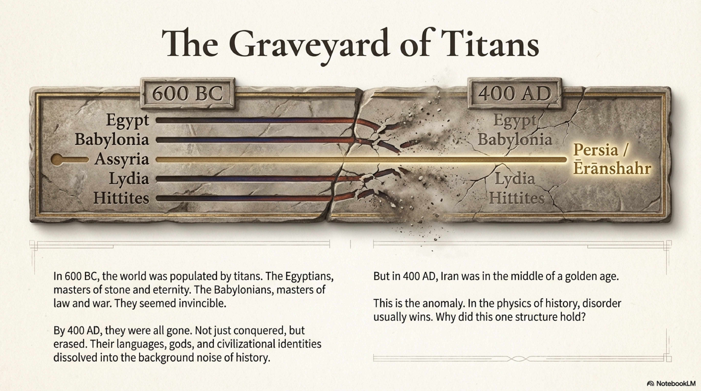
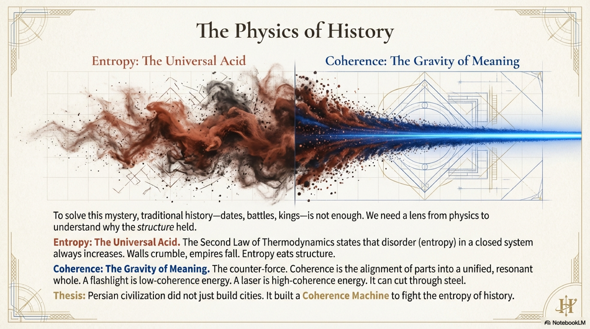
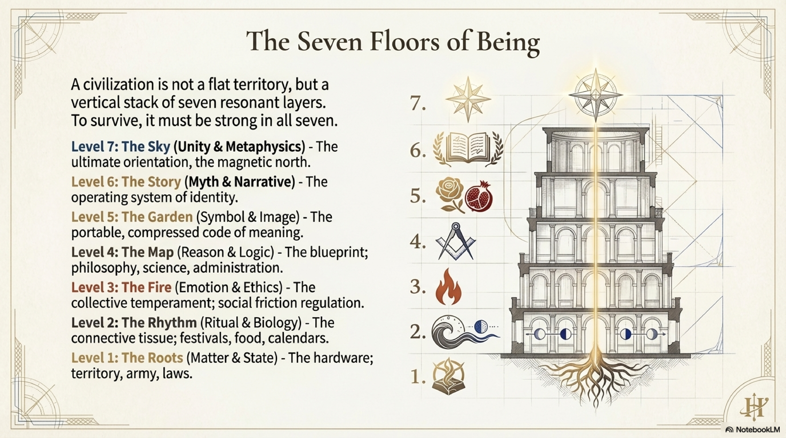
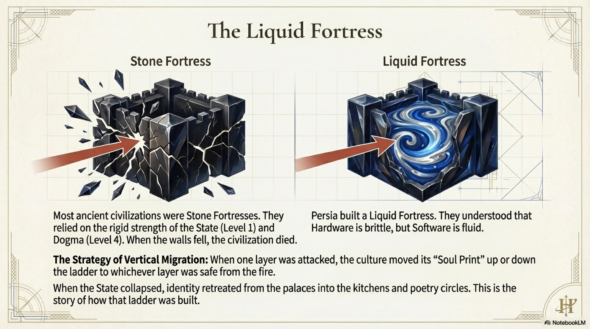
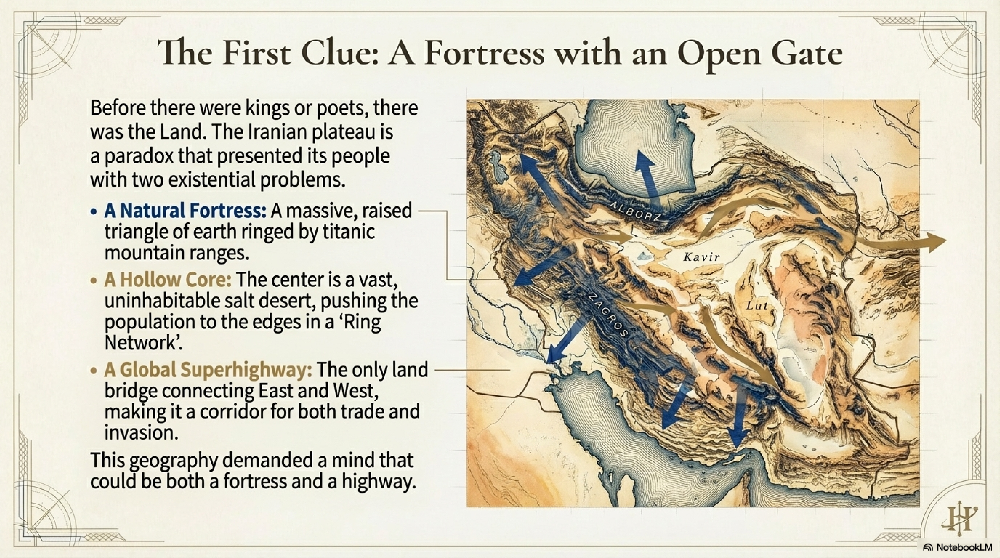

If the Abbasid bureaucracy was the operating system of the Islamic Golden Age, Ibn Sina—known to the West as Avicenna—was its Central Processing Unit.
Born in the year 980 AD near Bukhara, Ibn Sina is a figure of towering intellect. He wrote 450 works. He memorized the Quran by age ten. By eighteen, he had mastered all the sciences of his day. In the West, he is remembered primarily as a physician; his Canon of Medicine was the standard textbook in European universities for six hundred years.
But to define Ibn Sina as a doctor is like defining Einstein as a patent clerk.
Ibn Sina was the supreme architect of Level 4, The Map.
He represents the moment when the Persian Mind fully internalized the tools of Greek logic—specifically Aristotle—and used them to build a comprehensive, crystalline model of the entire universe.
Before Ibn Sina, knowledge was fragmented. There was theology, there was medicine, there was astronomy. Ibn Sina saw them all as branches of a single tree. He sought Total Coherence.

His first great achievement was in Level 2, The Rhythm.
Medicine, in the 10th century, was a mixture of observation, superstition, and trial-and-error. It was high-entropy data. Ibn Sina applied the rigorous structure of Logic to the chaos of the human body.
The Canon of Medicine (Al-Qanun fi al-Tibb) is not just a list of cures. It is a system. He categorized diseases, standardizing diagnoses and treatments based on a logical framework of humors and temperaments. He introduced the concept of quarantine to limit the spread of disease—a structural intervention to stop biological entropy.
In our framework, he reduced the Informational Entropy of medicine. He created a high-fidelity map that allowed physicians to navigate the complexity of the body with a predictable algorithm. He turned the art of healing into a science of structure.

But his greatest work was in metaphysics, the domain of The Sky.
Ibn Sina faced a massive intellectual problem. How do you reconcile the rational, eternal universe of Aristotle with the created, dependent universe of Islam?
He solved it with a concept of breathtaking elegance: The Necessary Existent (Wajib al-Wujud).
He argued that everything we see in the universe is "Contingent." It exists, but it didn't have to exist. Its existence depends on something else, a cause.
If you trace this chain of dependency back, you cannot go on forever. An infinite regress is unstable; it is high entropy. There must be a foundational anchor. There must be a Being whose existence is not contingent on anything else. A Being whose very nature is to exist.
This is the Necessary Existent, or God.
This was a thermodynamic argument for God. Ibn Sina proved that a universe of contingent parts—variable coherence—requires a source of absolute, non-contingent Reality—Maximum Coherence—to sustain it. He anchored the entire chain of being in a stable singularity.

However, Ibn Sina’s most radical contribution—the one that anticipates the very core of FRC—was his investigation into the self.
He proposed a thought experiment known as the Floating Man.
Imagine a man created spontaneously in a void. He is floating in air. He has no sight. No hearing. No touch. His limbs are splayed so they do not touch his body. He has absolutely zero sensory input.
The question is: Does he know he exists?
Ibn Sina’s answer was an emphatic Yes.
Even without a body, without a world, without a single input from the outside, the man would still have the raw, undeniable awareness of his own "I-ness."
He would affirm: "I am."
This was the discovery of the Witness, or Level 6, The Story (in its purest, pre-narrative form). Or, in FRC terms, the Nous.
Ibn Sina proved that consciousness is not a byproduct of the senses. It is not "bottom-up" data processing. It is a fundamental, independent faculty of the soul. The Witness exists prior to the Witnessed.
This distinction is the bedrock of the Persian Mind. It separates the Self from the Vehicle.
If you know that your "I" is independent of your body, then the destruction of the body—or the state, or the city—does not destroy You. This insight provided the psychological resilience necessary to survive the coming storms.

Ibn Sina built a fortress of Logic. He created a system where Reason could explain everything from a stomach ache to the nature of God. He raised the Coherence of the Islamic world to its highest intellectual peak.
But a fortress can become a prison.
Ibn Sina’s God was the God of the Philosophers: a remote, perfect, logical necessity. He was a God you could prove, but not a God you could love.
The system was perfect, but it was cool to the touch. It lacked the fire of the ancient temples. It lacked the pathos of the heart.
The Persian Mind had mastered The Map. Now, it needed to rediscover The Garden. It needed to find a way to break out of the crystalline cage of reason and touch the infinite directly.
The stage was set for the rebellion of the Mystics. And it would begin with a man who looked at Avicenna’s perfect logic and said, "This is not enough."